8+ yrs
building software & data products
Adam Tang
GenAI Engineer | Data Scientist
GenAI Engineer | Data Scientist
I turn complex requirements into reliable AI, data, and software products—combining engineering depth with clear delivery.
8+ yrs
building software & data products
GenAI
LLMs, RAG, Agents, LangChain, LangGraph
Engineering
Python, FastAPI, Flask, Docker, CI/CD
Leadership
Product ownership, agile delivery, mentoring
Selected contexts
Blending research rigor, production delivery, and business execution.
What I do
From architecture to delivery, I keep teams aligned on outcomes, safety, and speed.
Scrum, Kanban, and clear scope control.
Energy, sustainable materials, and resilience engineering.
Frontend, backend, data, and deployment.
Ontology and graph-first data products.
Education
A chronological path from mechanical engineering to sustainable systems; expand each milestone for details.
 BSc
BSc
Sep 2012 - Jun 2016 | New Taipei City, Taiwan
Overall grade: 1.3 (German grade), equiv. 3.8/4.0. Dean's List: Feb 2014, Sep 2014, Feb 2015.
Foundation in mechanics, materials, and engineering workflows.
Feb 2018 - Aug 2018 | Taipei, Taiwan
Completed all required courses; received admission to Freiburg to continue thesis and degree.
Strengthened control systems, automation, and applied research skills; accepted to continue MSc thesis in Freiburg.
 MSc
MSc
Oct 2018 - Feb 2021 | Freiburg, Germany
Master Thesis: 1.0 (German grade), equiv. 100/100, 4.0/4.0.
Overall Grade: 1.7 (German grade), equiv. 91/100, 3.6/4.0.
Focused on sustainable systems, materials, and data-driven analysis.
Credentials
Snapshot of current credentials. Filter for what you care about.
Experience
Quick meta view; open any role to see responsibilities and outcomes.
Oct 2021 - Oct 2025 | Freiburg
Building GenAI assistants, knowledge graphs, and data pipelines for material life-cycle analysis and production planning.
Mar 2023 - Jul 2024 | Taipei
Managed an e-commerce company end-to-end: management, site build, marketing, and business model.
Apr 2021 - Sep 2021 | Freiburg
Impact and delamination modeling for CFRP configurations with end-to-end simulation workflow.
May 2020 - Dec 2020 | Freiburg
Failure modeling for hybrid lap joints under tensile loading.
May 2020 - Dec 2020 | Taipei
Supported bioprocess hardware assembly and electronics for microbioreactors.
Dec 2019 - Mar 2020 | Freiburg
Simulation and experimental support for torsion and fatigue studies.
Feb 2018 - Aug 2018 | Taipei
Spectrum data processing for microalbumin urine tests.
Sep 2012 - Sep 2018 | Taipei
Tutored math, physics, and chemistry while supporting students’ applications.
Oct 2015 - Jan 2016 | Taoyuan
Supported lab operations and PDMS sensor fabrication research.
Jul 2015 - Aug 2015 | New Taipei City
Shop-floor support for switchboard parts manufacturing.
Selected projects
Scan the portfolio, then open any project for ownership, architecture, technical decisions, and outcomes.
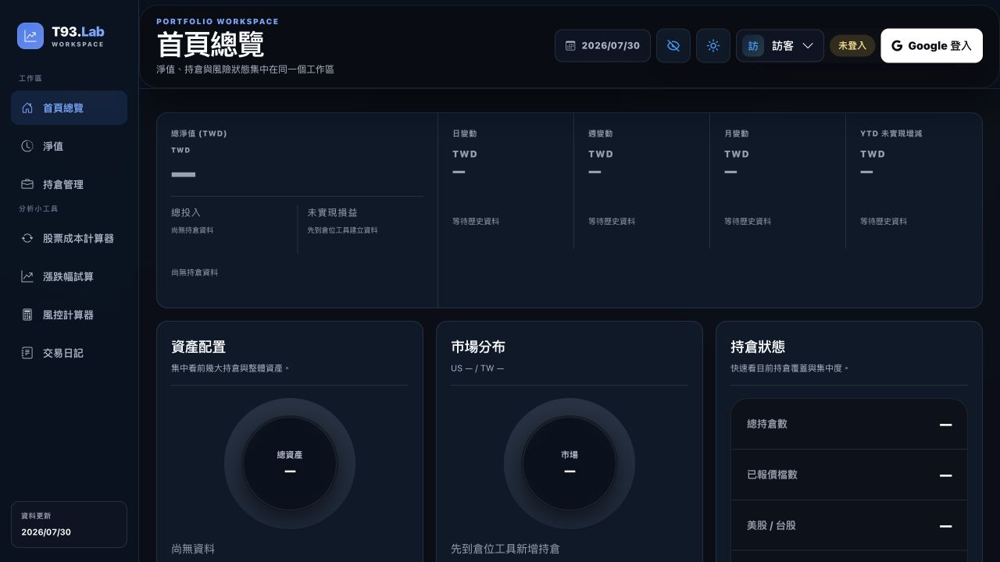
Jun 2026 - Present
Private Taiwan/US portfolio workspace for net worth, positions, DCA, risk, journals, and cloud-synced market data.
Personal investment data was fragmented across devices, spreadsheets, market-data sources, and separate Taiwan/US workflows. The product needed a single private workspace without exposing credentials or portfolio data in the browser.
Responsive workspace, net-worth view, position manager, risk calculators, and journal.
Supabase Google OAuth, allowlist approval, cloud-sync layer, and localStorage migration.
Cloudflare Pages Functions validate sessions and orchestrate market, sell, and history APIs.
Supabase Postgres/RPC plus scheduled incremental history updates and provider fallbacks.
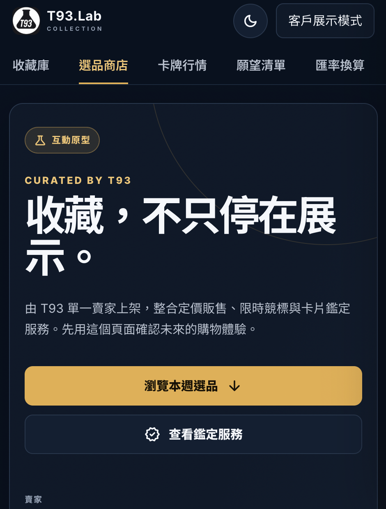
Jul 2025 - Present
Notion-powered collectible vault with valuation analytics, private access, scheduled publishing, market lookup, and commerce prototypes.
A private trading-card collection needed to work as a searchable collection, valuation dashboard, wishlist, and member-only market experience while keeping editorial data easy to maintain.
Notion databases hold collection metadata, research notes, prices, and wishlists.
Python fetches and normalizes records, caches exchange rates, and renders Jinja2 pages.
GitHub Actions publishes the generated site to Cloudflare Pages on schedule or demand.
Cloudflare middleware/Functions and Supabase Auth/Postgres protect users, admin data, and aggregate APIs.
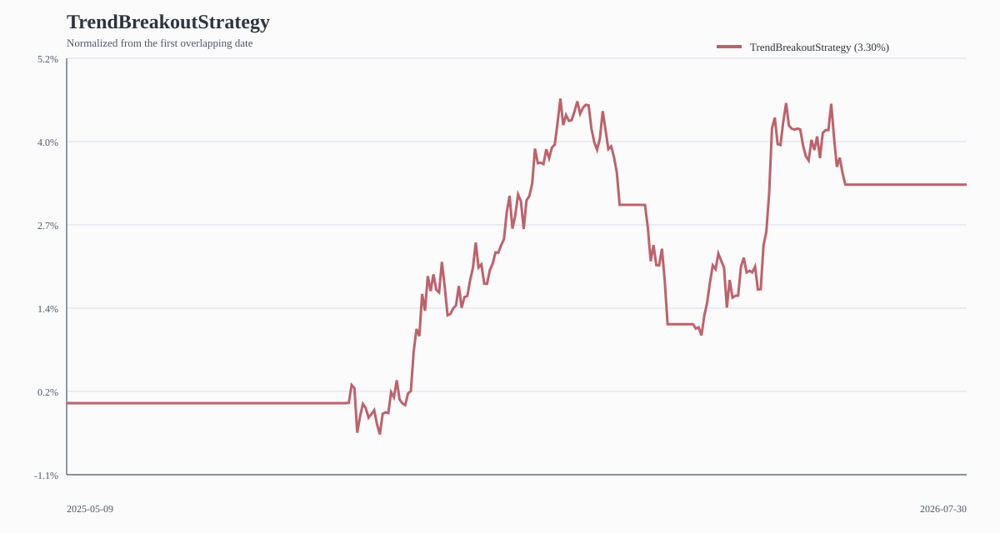
Jul 2026 - Present
Python research-to-paper-trading framework with Taiwan market data, cost-aware backtests, walk-forward validation, and Shioaji adapters.
Taiwan-market research needs consistent data, realistic costs, repeatable backtests, strong validation, and a safe path from strategy output to paper execution before any live deployment.
Downloaders and adapters normalize OHLCV, futures contracts, calendars, and live ticks.
Strategies run through Backtrader with Taiwan-market costs, benchmarks, optimization, and walk-forward validation.
Validated strategy output is converted into target positions rather than direct orders.
Runtime guards, paper/Shioaji adapters, callbacks, reconciliation, and reports control downstream execution.
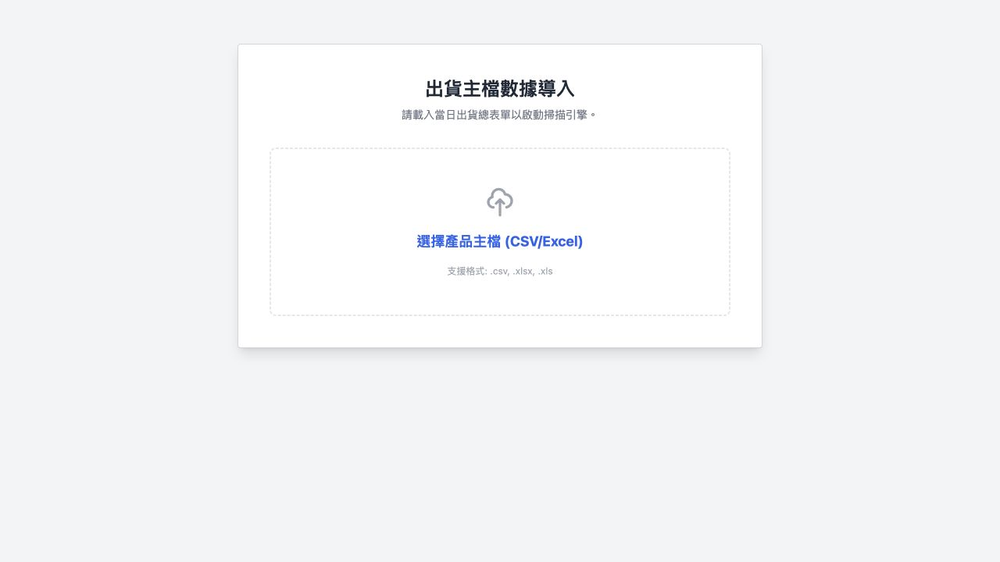
Apr 2026 - May 2026
Operational scanning workflow that imports shipment plans, validates GS1 UDI, flags exceptions, and exports auditable completion records.
Daily shipping teams needed a safer way to import shipment plans, scan medical-product UDI codes, catch over-scans or mismatches, and produce an auditable end-of-day result.
CSV/XLSX shipment plan and scanned GS1 UDI strings enter the operator workspace.
UDI parser and mapping data resolve GTIN/UDI-DI, part number, item, and expected quantity.
FastAPI services manage previews, exception states, submissions, statistics, and session reset.
Confirmed results persist to SQLite; Excel summaries and a database backup are exported at close.
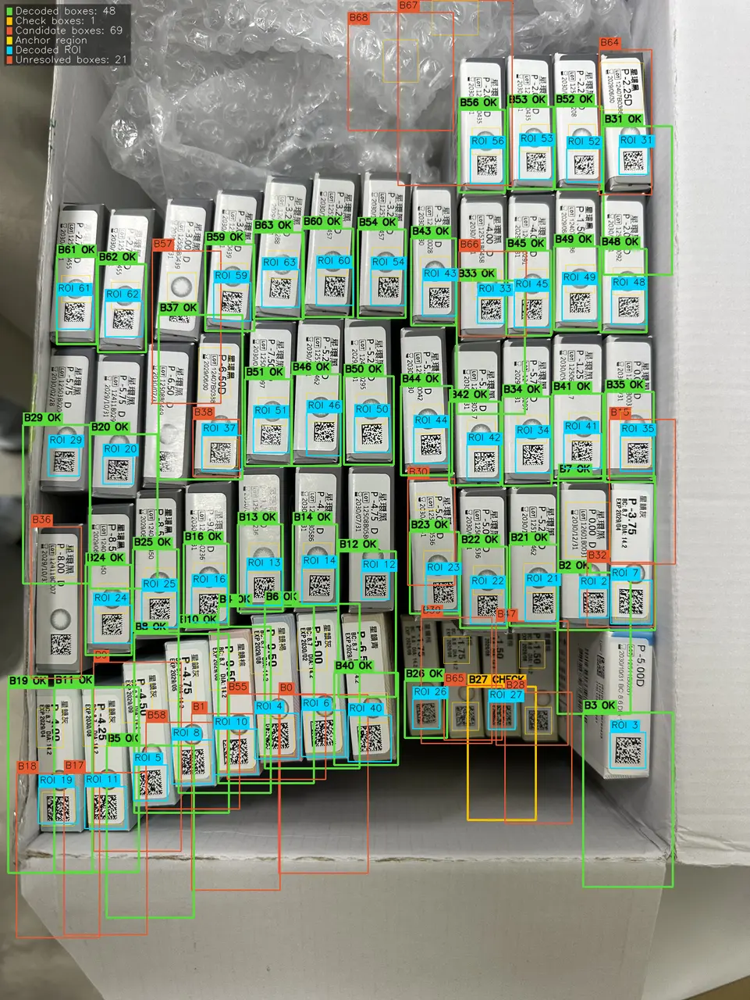
Mar 2026 - Apr 2026
Benchmark-driven computer-vision POC for decoding dense carton images into GS1 business fields with safe PASS/REVIEW handling.
Dense shipping photos can contain many small Data Matrix codes with perspective, occlusion, and repeated cartons. Missing a code must lead to review rather than an unsafe automatic pass.
Whole shipping image enters product-box proposal and ranking.
Per-box lower-band and rescue strategies generate Data Matrix candidates.
ZXing/pylibdmtx decode symbols; GS1 parsing extracts DI, dates, lot, and serial fields.
Mapping enrichment, expected-count gate, JSON/CSV artifacts, and annotated review support PASS or REVIEW.
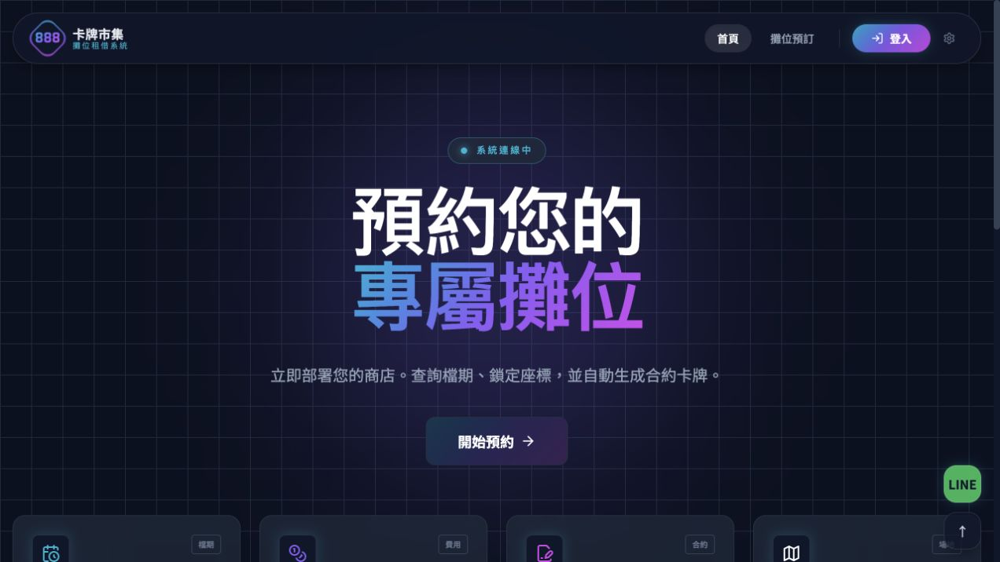
Feb 2026 - Mar 2026
Full-stack vendor reservation and administration system with booth availability, rental inventory, and generated contracts.
A physical card market needed one system for brand presentation, vendor onboarding, booth availability, reservations, rental extras, contract generation, and staff administration.
Vue SPA presents the brand site, vendor reservation flow, and role-aware administration.
Express validates identity and coordinates booth, date, rental, reservation, and admin services.
Sequelize persists members, availability, reservations, and configuration in MySQL.
PDFKit creates contracts in persistent storage; Docker Compose runs client, API, database, and optional tunnel.
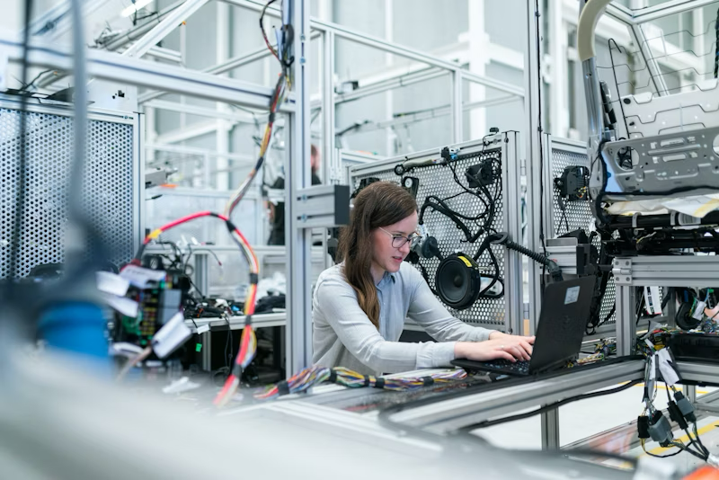
Nov 2025 - Dec 2025
Assistant that transforms product specs into optimized production plans with domain RAG and safety rails.
Production planners need to query schedules, facts, constraints, and operating knowledge in natural language without letting an LLM invent production data.
Chainlit accepts multilingual planning questions and displays grounded responses.
FastAPI agent classifies intent and routes work to graph, SQL, vector, or translation tools.
Postgres facts, Neo4j semantics, Chroma documents, and seeded rules provide bounded context.
Docker Compose coordinates API, UI, databases, vector store, and local Ollama services.
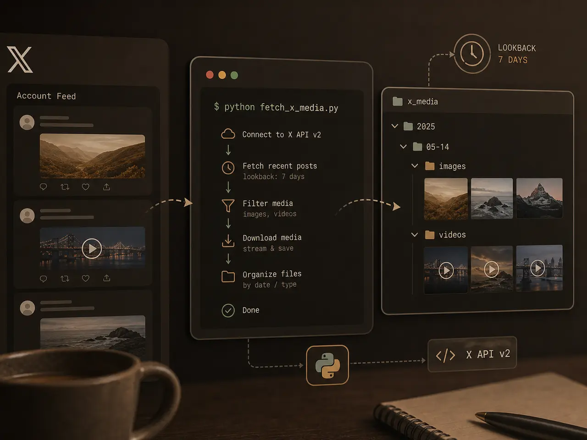
Dec 2025
Configurable Python utility for retrieving recent account media through X API v2 with filters, pagination, rate limits, and CDN fallbacks.
A repeatable collection workflow needed to retrieve only recent media from a selected X account while handling API limits, media variants, and unreliable image URLs.
Environment variables and CLI options define account, time range, filters, and output policy.
Authenticated requests resolve the user, page through recent posts, and expand media metadata.
Keyword/media filters, variant ranking, URL normalization, and duplicate control select artifacts.
Resilient HTTP retrieval writes timestamped media files and reports rate-limit or content failures.
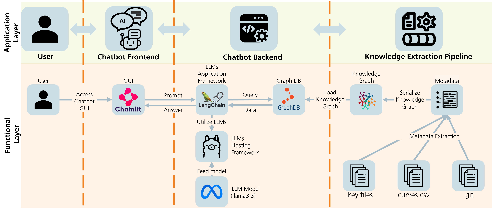
Oct 2024 - Oct 2025
Recommender system with retrieval, grounding, and policy-aware responses for automotive R&D.
Automotive R&D users needed a private assistant that could retrieve engineering evidence, preserve internal knowledge boundaries, and provide useful answers without sending sensitive content to a public model service.
Chainlit captures engineering questions and displays sources and answers.
RAG and GraphRAG search documents, metadata, and knowledge relationships.
A local Ollama model receives bounded evidence and domain prompt instructions.
Docker services keep data, application, and model execution inside the controlled environment.
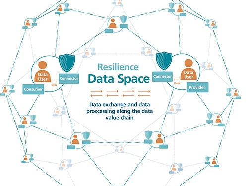
Mar 2022 - Oct 2025
Material lifecycle knowledge graph with SPARQL analytics powering sustainability reporting.
Crisis and resilience stakeholders needed to exchange heterogeneous data with shared meaning, provenance, and reusable analytics across organizational boundaries.
Partner systems publish domain data and descriptive metadata.
Python pipelines normalize payloads and align them to shared semantic models.
Connector and governance services exchange data while retaining provenance and control.
Ontologies, graphs, SPARQL analytics, and resilience applications consume the integrated data.
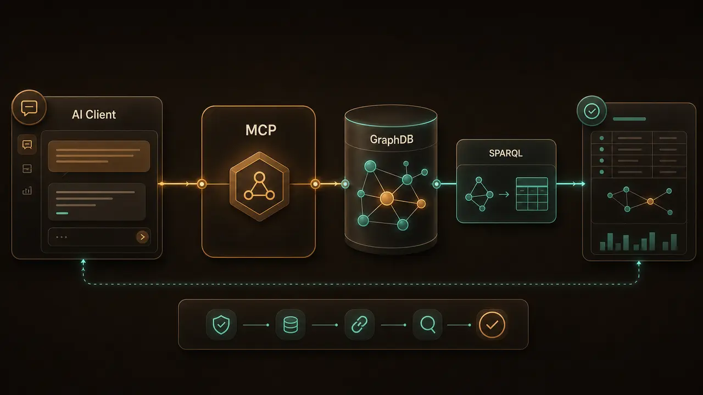
May 2025 - Jun 2025
Open-source Model Context Protocol connector that gives LLM clients controlled, read-only access to GraphDB repositories and SPARQL.
LLM clients needed a narrow, read-only way to inspect approved knowledge graphs and execute SPARQL without receiving broad database credentials or write access.
An MCP-compatible assistant requests graph discovery or a bounded query.
Tool schemas validate requests and enforce the read-only connector boundary.
Repository APIs and SPARQL endpoints evaluate approved semantic queries.
Normalized graph results return to the model for explanation or downstream reasoning.
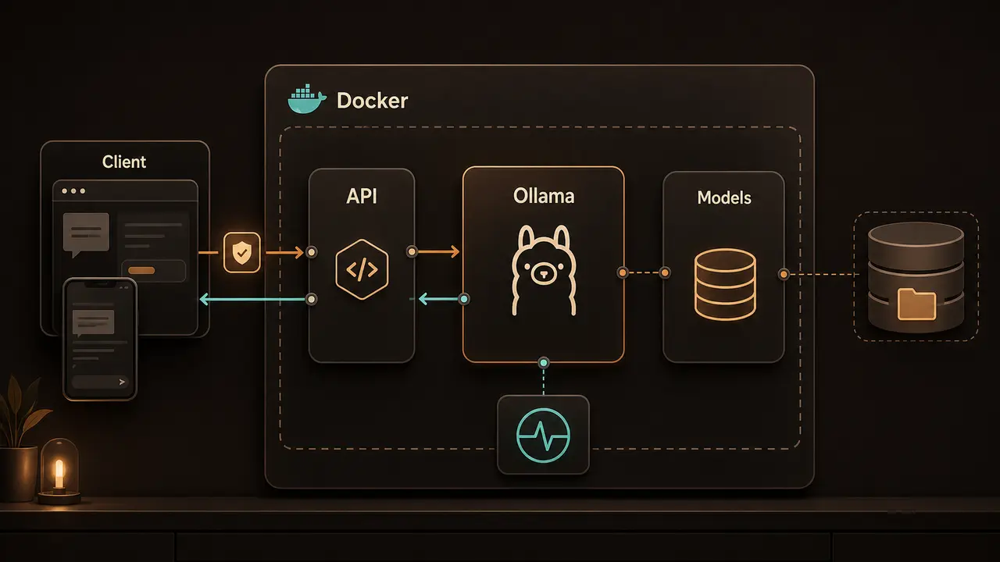
Apr 2024 - Mar 2025
Reproducible container setup for local LLM serving, persistence, service integration, and hosted demonstrations.
Local LLM experimentation becomes difficult to reproduce when model serving, dependencies, persistence, and network settings are installed manually on each machine.
Local applications or API users send prompts or health requests.
Python integration layer validates and forwards model operations.
Ollama serves configured models inside an isolated container with persistent storage.
Docker Compose runs locally; the same configuration can be adapted for hosted demonstrations.
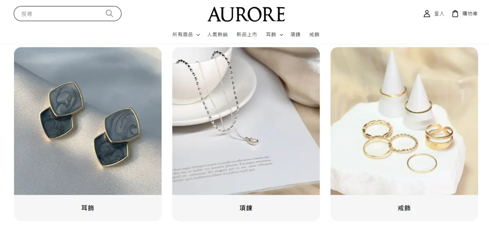
May 2023 - May 2024
Shop build, payments, and marketing analytics for Aurore Collection.
A new jewelry brand needed a credible online storefront and an operating model that connected discovery, checkout, fulfillment, analytics, and marketing experiments.
Social, campaign, and search traffic lands on product and collection content.
Responsive catalog, product detail, cart, and checkout guide purchase decisions.
Payments, order handling, fulfillment, and customer communication support operations.
Analytics and conversion tracking inform marketing and product iteration.
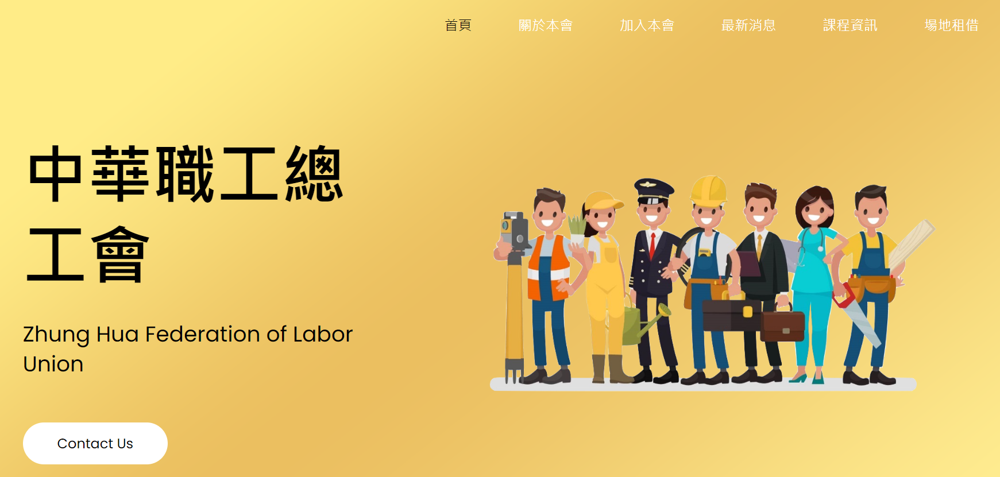
Feb 2023 - Mar 2023
Union information site with clear navigation and member resources.
A labor union needed an accessible public information hub that members could navigate easily and maintain through a simple deployment workflow.
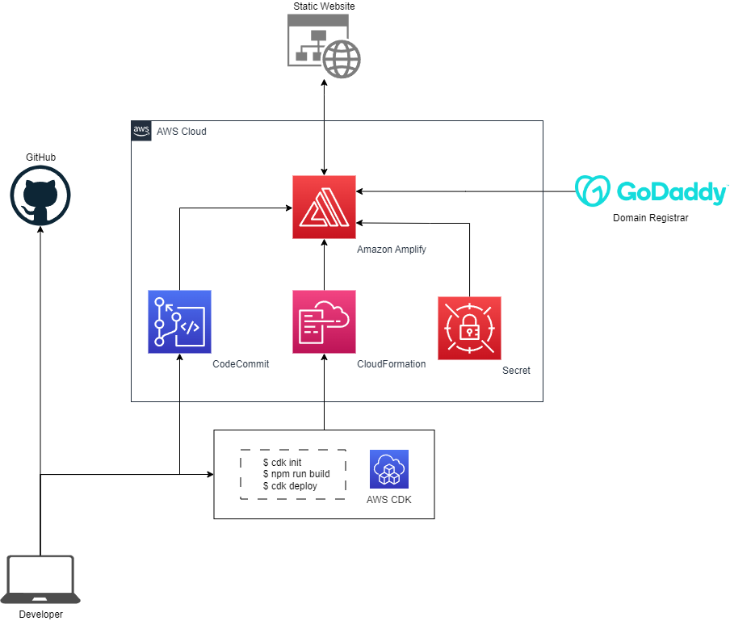
Website code and content are versioned in GitHub.
AWS Amplify detects changes and produces the static deployment.
Amplify serves the generated assets through managed web infrastructure.
DNS connects the public zhflu.org address to the hosted site.
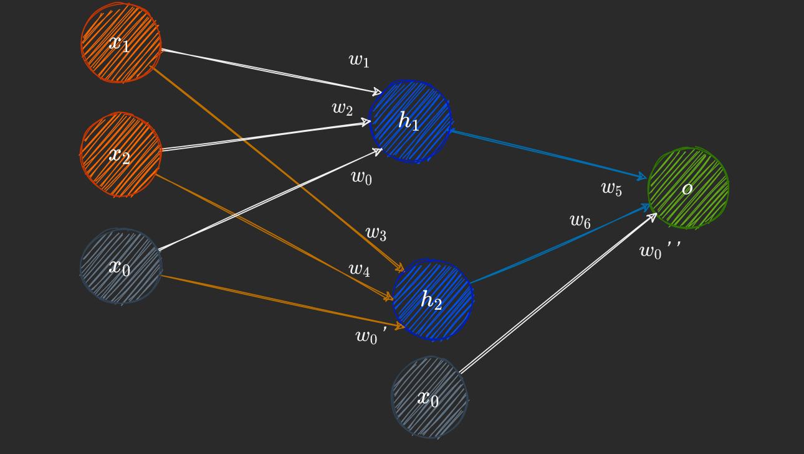
Apr 2022
Small neural net demo for logical gates with lightweight visualization.
XOR is not linearly separable, so it is a compact way to demonstrate why a single perceptron fails and how hidden layers learn nonlinear decision boundaries.
Binary pairs and expected XOR labels form the training set.
A multilayer perceptron applies weighted transforms and nonlinear activations.
Loss gradients update network parameters over repeated epochs.
Predictions and visualizations show whether the learned boundary solves XOR.
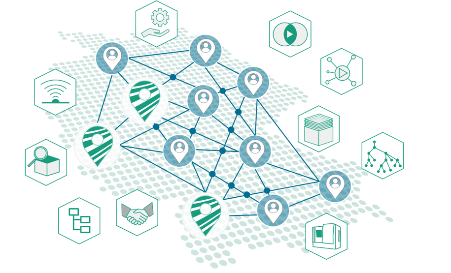
Oct 2021 - Feb 2022
Data pipeline and visualization for sustainability scoring across additive manufacturing processes.
Additive-manufacturing sustainability data spans materials, process steps, energy, and lifecycle impacts, making consistent traceability and comparison difficult.
Material, machine, energy, and process records provide lifecycle evidence.
Python validates, transforms, and aligns heterogeneous records.
Ontology and knowledge graph connect products, steps, resources, and impacts.
Queries and visualizations expose traceability and sustainability indicators.
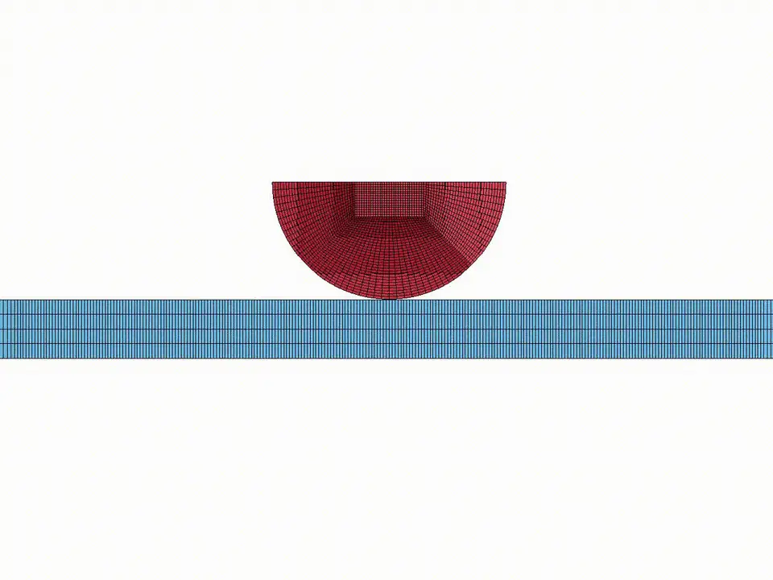
Mar 2021 - Sep 2021
Delamination modeling and visualization for high-speed helicopter components.
Composite helicopter components can sustain internal delamination after impact even when surface damage is limited; simulation needs to reproduce the loading and failure behavior credibly.
Composite layup, geometry, mesh, materials, contacts, and impactor define the simulation.
LS-DYNA calculates transient stress, deformation, energy, and damage evolution.
Python parses solver outputs into comparable engineering indicators.
Results are reviewed against test setup, physical expectations, and delamination patterns.
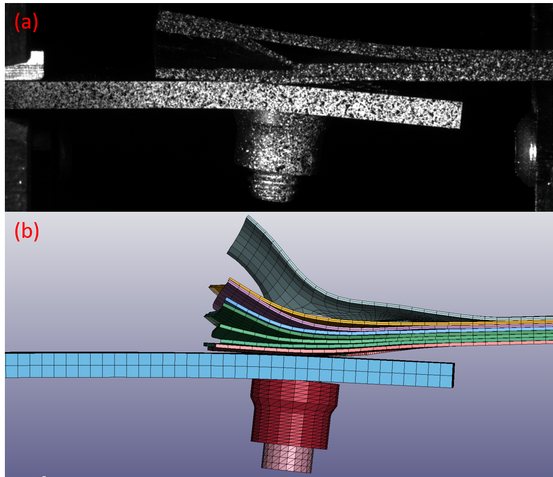
May 2020 - Jan 2021
Failure modeling for hybrid lap joints under tensile loading in LS-DYNA.
Single-lap aluminum–CFRP hybrid joints fail through interacting adhesive, interface, and structural mechanisms that are difficult to observe directly in tests.
Specimen geometry, materials, boundary conditions, and tensile measurements define the reference.
Metal, CFRP, adhesive, mesh, contacts, and cohesive parameters represent the joint.
LS-DYNA calculates load transfer and progressive damage under tensile loading.
Python aligns curves and failure modes to evaluate model credibility.
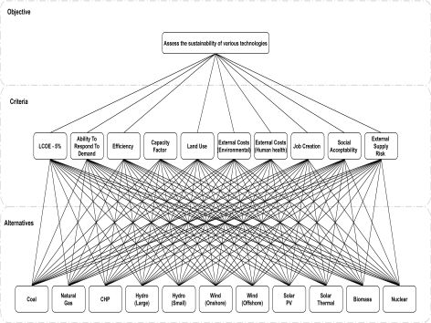
Oct 2019 - Feb 2020
AHP model to rank sustainability criteria across materials and processes.
Sustainability choices combine environmental, economic, and social criteria with different units and stakeholder priorities, so a transparent ranking method was required.
Goal, criteria, subcriteria, alternatives, and pairwise judgments define the hierarchy.
AHP derives criteria priorities and checks judgment consistency.
WSM and TOPSIS score alternatives under the selected weights.
Tables and plots expose ranking, sensitivity, and disagreements between methods.
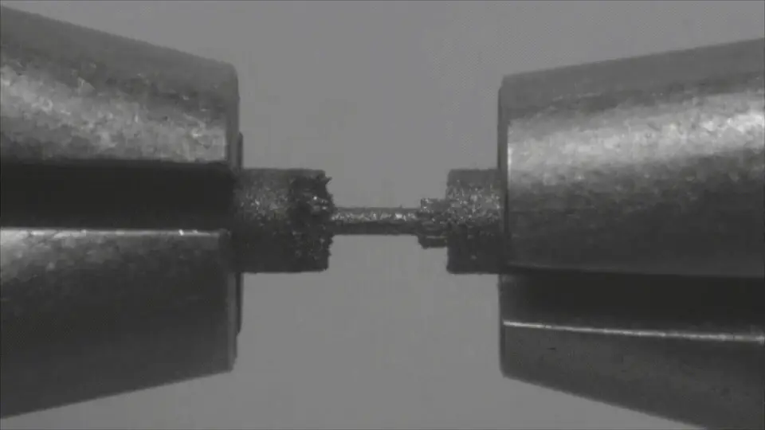
Oct 2019 - Feb 2020
Test rig and analysis for small-scale material fatigue under cyclic stress.
Small additively manufactured specimens needed controlled cyclic loading and repeatable data capture to investigate fatigue behavior.
Specimen, load amplitude, cycle profile, and stop conditions define the experiment.
Python commands the motor/actuator and coordinates acquisition.
Sensors record the mechanical response over repeated cycles.
Processed histories expose fatigue behavior and differences between specimens.
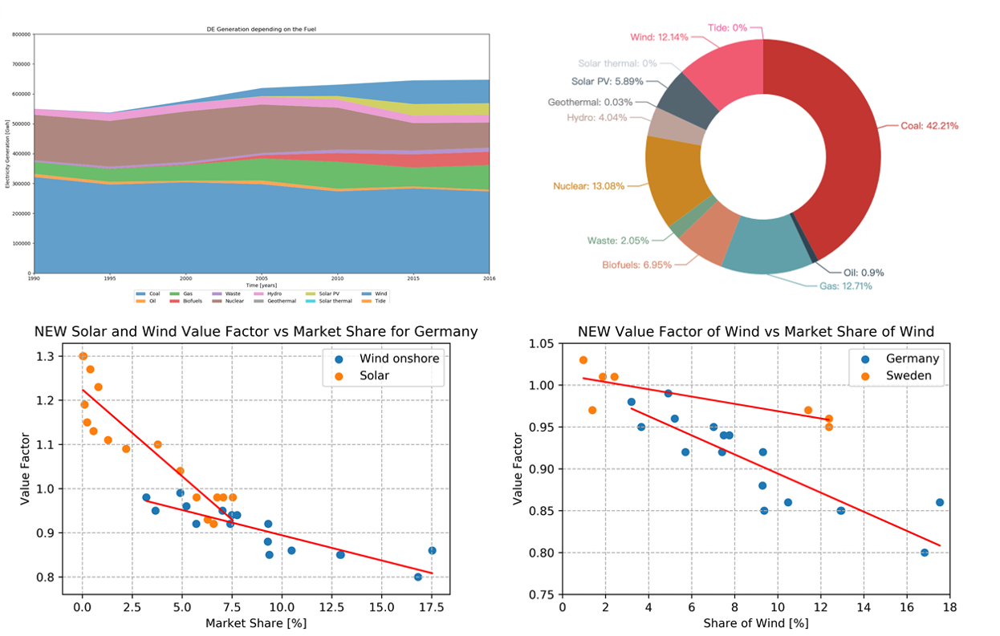
Apr 2019 - Jul 2019
Market value evaluation for wind and solar across electricity markets.
Wind and solar generation have different market value because production profiles interact with time-varying electricity prices, not just annual energy totals.
Renewable generation profiles and electricity market prices provide aligned time series.
Python cleans timestamps, gaps, units, and comparable periods.
Capture price and value-factor calculations quantify market value.
Plots and scenarios explain why technology value differs by timing and market.
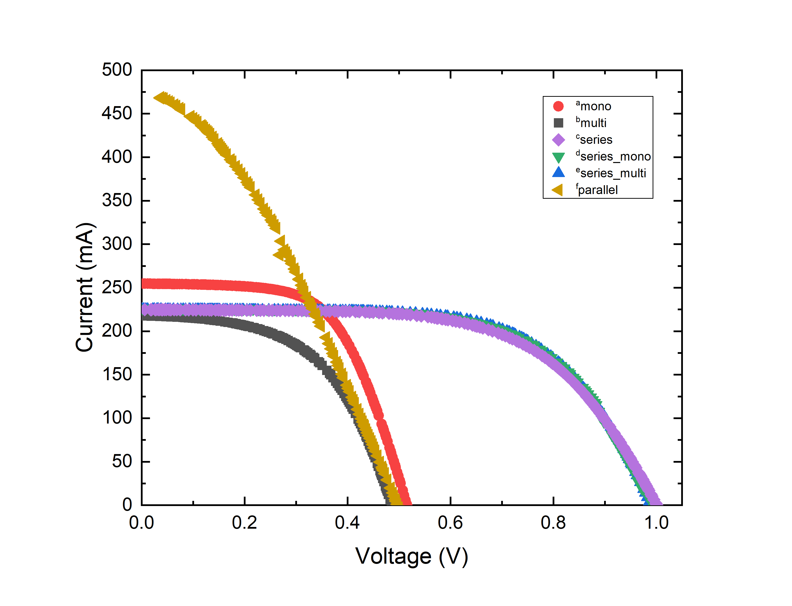
Apr 2019 - Jul 2019
Lab study comparing PV cell performance with structured reporting.
Photovoltaic cells and module configurations respond differently to irradiance, mismatch, and bypass behavior, requiring controlled measurement and comparable analysis.
PV device, illumination, load sweep, sensors, and bypass configuration define each run.
Voltage/current samples record the device response across the operating range.
Python derives characteristic points and compares I-V curve behavior.
LaTeX combines method, evidence, limitations, and engineering conclusions.
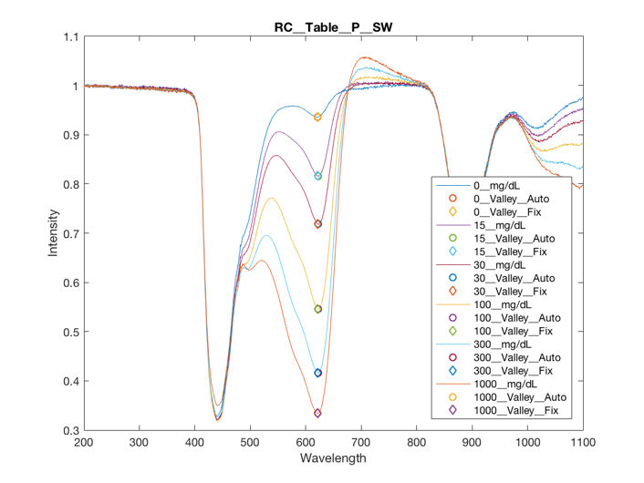
Feb 2018 - Sep 2018
Signal processing pipeline for microalbumin test spectra in MATLAB.
Microalbumin spectroscopy signals contained baseline drift and measurement noise that obscured concentration-related patterns.
Sample, light source, spectrometer, and Arduino-linked controls produce raw spectra.
MATLAB imports, aligns, filters, and inspects the signal.
Polynomial baseline modeling separates drift from the analytical spectrum.
Corrected curves and fitted features support concentration comparison.
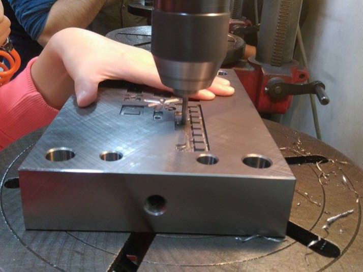
Sep 2015 - Jan 2016
Process follow-up and testing for switchboard parts manufacturing.
An injection-molded component required coordinated product geometry, mold design, process simulation, machining, molding, and quality follow-up.
Requirements become part geometry and mold/tooling concepts.
Mold-flow analysis evaluates filling, pressure, cooling, and defect risk.
CNC and tooling preparation enable injection-molding trials.
Inspection and test results drive revisions to design or process settings.
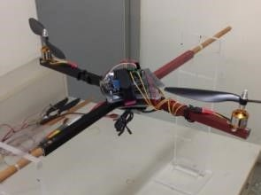
Mar 2015 - Jun 2015
Quadcopter flight control design and testing with sensor feedback.
A quadcopter must estimate attitude and continuously correct four motor outputs fast enough to remain stable despite sensor noise and disturbances.
IMU measurements capture angular rate and acceleration.
Embedded filtering produces a stable attitude estimate.
PID loops calculate roll, pitch, yaw, and throttle corrections.
Motor mixing and ESC signals adjust four propellers; motion feeds back to the sensors.
Skills
Four capability areas, from AI systems to product delivery and engineering foundations. Expand any row for the full toolkit.
Grounded assistants, agent workflows, semantic data, and evaluation.
Orchestration
Semantic modeling
Experience & quality
APIs, data pipelines, tests, and deployable runtimes.
Data pipelines & analytics
Application layer
Runtime & reliability
From requirements to coordinated, repeatable delivery.
Frame & lead
Version & deliver
 GitHub Actions
GitHub Actions
Physical modeling, simulation, control, and experimentation.
Modeling & simulation
Physical systems
Let's collaborate
I'm open to consulting, fractional leadership, or full-time roles that value pragmatic shipping.